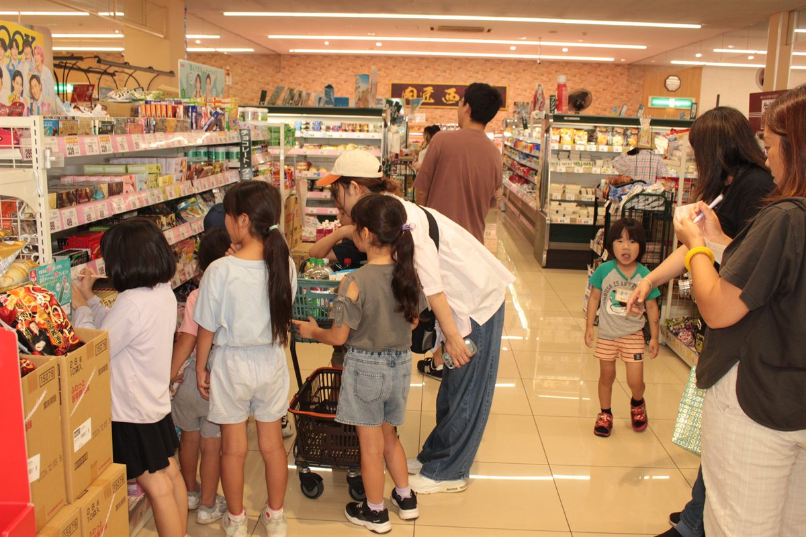
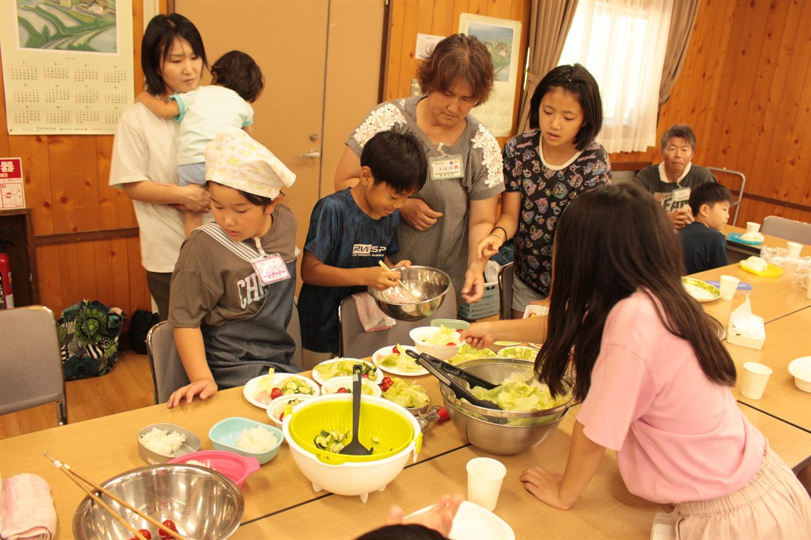
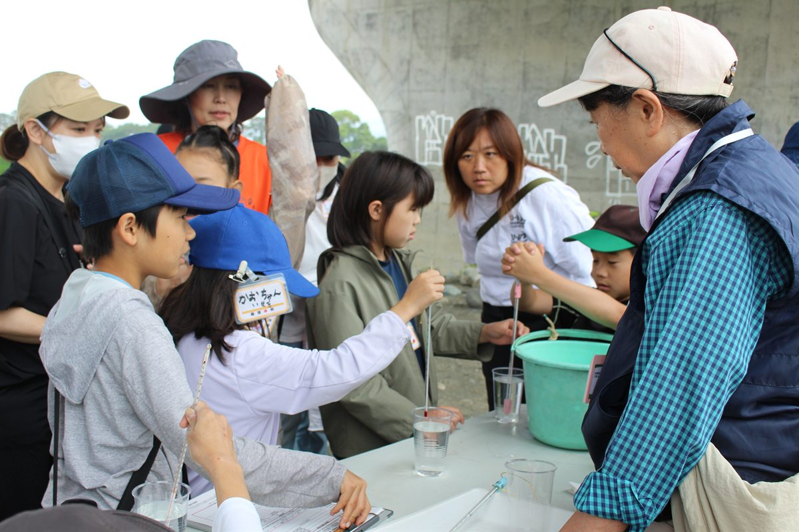

ホーム ／ 活動の記録
活動の記録
活動が終わるたびに、写真と記録を追加していきます。2011年の開校から数えて、2026年で16期目になりました。
2026年度
第16期の活動
新しいものが上に並びます。
2026年7月26日
カレー作りと報徳学習
曽我みのり館分館
参加人数が少なかったので、2チームに分かれて、カレーを作りました。何を買ってくるかを予算内で決め、買い物も自分たちで。買い物を終えたら、早速野菜を切って調理をしました。午後は、木工クラフトに挑戦。薪を背負った二宮金次郎を作りました。


2026年6月21日
地引網とバーベキュー（中止）
大磯海岸 台舟
台風の接近で、中止しました。楽しみにしていた行事だけに、残念でした。
2026年6月7日
酒匂川の水質調査と自然観察会
ひょうたん池広場
大井町コミュニティ研究会の行事に参加し、酒匂川の水質検査をしました。講師は風間真理さん。酒匂川周辺は、とても自然豊かなことが再確認できました。

2026年5月31日
サツマイモの苗植え
報徳楽校の畑
サツマイモの苗を150本植えました。秋の芋ほりと、10月のこども報徳市につながります。
2026年5月23日・24日
田植え
楽校の田んぼ
2日間の分散実施で、5枚の田んぼを手で植えました。田植えをする前に、泥んこ遊びをしました。みんな全身泥まみれになって、楽しみました。
2026年4月19日
入楽式
尊徳記念館 講堂
第16期がはじまりました。顔合わせとゲーム、金次郎の史跡ウォーキング。お昼はおにぎりをいただきました。
これまでの歩み
第1期から第15期まで
旧ホームページに残されていた記録を、順次このサイトへ移しています。
過去の期の詳しい記録は、現在このサイトへ移す作業を進めています。写真は2,000枚以上あり、順にご覧いただけるようにしていきます。
いっしょに活動しませんか
報徳楽校では、毎年新しい仲間を募集しています。まずは「報徳楽校に申込みます」とメールをお送りください。
報徳楽校 教務担当 水野和則（かずさん）